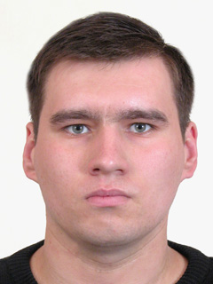

- ФИО
- Дата рождения
- Семейное положение
- Адрес прописки
- Телефон
- Почта
- GitHub

Образование
1999-2003 гг.
Ташкентский Государственный Авиационный Институт
Бакалавр "Радиотехника"
Опыт работы
2003-2006 гг.
2006-2011 гг.
2011-2016 гг.
2016-по н.в.
Национальная авиакомпания
ООО "Unitel"
ООО "Sharifa"
ООО "Light Technology"
Авиатехник
Инженер
Инженер сетевого оборудования
Инженер сетевого оборудования
Личные качества
Положительные
Отрицательные
Коммуникабельность, ответственность, инициативность, умение работать в коллективе
-